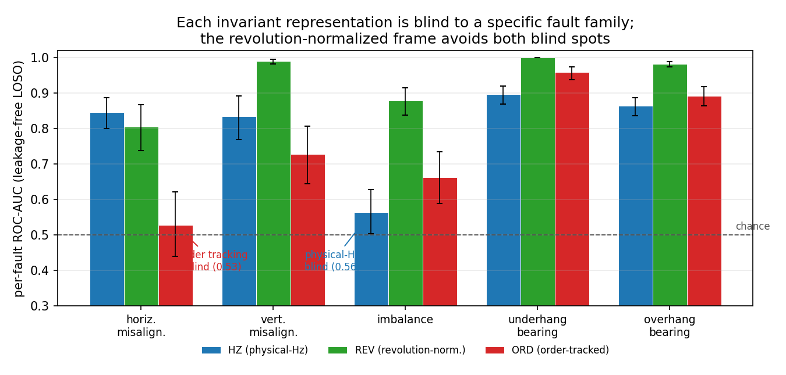

Ignore, Adjust, or Remove:
Handling Changing Speed in Unsupervised Machine Fault Detection
1School of Computer Science, Faculty of Sciences, Holon Institute of Technology (HIT), Holon, Israel
2Intelligent Systems, Afeka Academic College of Engineering, Tel-Aviv, Israel
Abstract
Machines are commonly monitored by training a fault detector on healthy data alone and flagging anything unusual. This is hard when the machine runs at varying speed, because a healthy machine vibrates and sounds very different across its speed range, so a real fault at one speed can look no stranger than a healthy machine at another. When speed changes, a detector can ignore it, adjust its healthy reference for the measured speed, or remove the speed by transforming the signal (order tracking, the classical approach). We show, on real machinery data, that the right choice is not obvious. Removing speed by order tracking is worse than ignoring it once the test speeds differ from training, while adjusting the healthy reference for the measured speed works best. Order tracking fails because it is blind to faults fixed in frequency rather than in shaft order: it scores at chance on shaft misalignment, which the untracked spectrum detects easily, and no single representation catches every fault. The method is deliberately simple: subtract a local healthy average matched to the current speed, then flag large leftover deviations, with no deep network. In a leakage-free test that holds out whole speeds, adjusting reaches ROC-AUC 0.956, against 0.901 for ignoring speed and 0.820 for removing it, and it wins on all five fault types on the MaFaulDa rig. The pattern holds on the MIMII-DG machine-sound dataset, except on a machine whose recorded setting was a background-noise level rather than a real operating state, where adjusting hurt. The right handling therefore depends on whether the condition actually drives the healthy behaviour, and we give a simple healthy-data-only check for deciding.
1 Introduction
Vibration and acoustic signatures are the standard evidence for the mechanical health of rotating machinery. In deployment the operative formulation is unsupervised: a detector is trained only on data from a healthy machine and must flag any deviation, because labeled fault examples are scarce, expensive, and rarely cover the fault that eventually occurs. This normal-only framing is the one adopted by the DCASE (Detection and Classification of Acoustic Scenes and Events) unsupervised anomalous-sound-detection challenges [3, 4] and by most machine-condition autoencoder work.
The dominant obstacle in this setting is operating-condition shift. A healthy machine at 1500 rpm and the same machine at 3500 rpm produce spectra whose peaks sit at entirely different frequencies; a normal-only model that pools across speeds therefore learns a wide, diffuse notion of "normal," and a genuine fault at an intermediate speed can score no more anomalous than a healthy sample at an unseen speed. The challenge is recognized: the DCASE 2021 and 2022 tasks explicitly frame speed and load variation as the cause of a domain shift between training and test [3, 4].
When a machine's operating condition is measured, rotation speed here, a normal-only detector has three choices for handling it. It can ignore the condition and pool a single healthy model across all speeds. It can remove the condition by transforming the signal, most commonly order tracking: resampling against shaft angle so that rotation-locked components land in fixed order bins regardless of speed. Or it can adjust its healthy model for the measured condition, that is, condition on it, which rotating machinery already supplies through its tachometer. Each choice keeps or discards different information: ignoring lets speed widen the normal class so faults hide in its spread; removing smears any component whose frequency is fixed in Hz rather than in shaft orders, and can destroy fault-relevant structure; adjusting keeps the condition but must estimate the healthy response as a function of it.
This paper treats that choice as the object of study rather than assuming an answer. We show on real machinery data that the right choice is not fixed. Removing rotation speed by order tracking is worse than ignoring it under speed shift, while adjusting for the measured speed beats both; yet adjusting for an attribute that is not a genuine operating state, a background-noise setting, is worse than ignoring it. We give a lightweight, nonparametric way to adjust, and a healthy-data-only rule for the choice: adjust only when the condition actually drives the healthy behaviour, measured by the cross-validated variance it explains, and remove only with caution, because removal can discard fixed-frequency fault energy. Our contributions are:
- A framing of healthy-reference construction under a measured operating covariate as a three-way choice, ignore the covariate, condition the healthy model on it, or remove it with an invariant transform, and evidence on MaFaulDa [1, 2] that the right choice is not fixed: removing rotation speed by order tracking is worse than ignoring it under speed shift, while conditioning on the measured speed beats both.
- A lightweight, nonparametric realization of conditioning, a local covariate-conditional healthy mean subtracted before a standard reconstruction-error detector, competitive without a deep conditional generator, backbone-agnostic across PCA and autoencoder detectors and effective across accelerometer and microphone channels.
- A healthy-only criterion for the choice, the cross-validated healthy variance the covariate explains, consistent with conditioning helping for genuine operating covariates and failing for the MIMII-DG fan noise mixture.
- A leakage-free leave-one-speed-out evaluation with cross-fitted healthy means and cluster-level uncertainty, plus a covariate-shuffle control showing the gain requires the true covariate.
2 Related work
Unsupervised anomaly detection. Normal-only detection is a broad field. Reconstruction and generative detectors flag inputs the model reconstructs poorly, from autoencoders and their memory-augmented variants [17] to adversarial and generative models [15, 16] and discriminatively trained reconstruction embeddings [14]; one-class and feature-distribution methods model the healthy region directly [11, 13] or by recall over a memory bank of healthy patches [12], and industrial benchmarks such as MVTec AD standardized the setting [18]. A parallel family scores a test point by its distance to healthy examples in a pretrained feature space, using Mahalanobis or nearest-neighbour statistics [35, 36, 37, 38]; we adopt a nearest-neighbour construction, but in the covariate rather than the feature space. For machine sound specifically, the DCASE Task 2 series and its datasets MIMII [5] and ToyADMOS [6] are the standard testbeds. None of these methods model the operating condition explicitly.
Machine condition monitoring. Vibration-based fault diagnosis has a large literature, surveyed for deep learning in [19, 20] and for bearings specifically in [22], with the CWRU set a common benchmark [21]. This work is predominantly supervised multi-class classification; the unsupervised, normal-only setting we study is the harder and more deployment-realistic one.
Domain shift and domain generalization. DCASE 2021 introduced anomalous-sound detection under domain shift and named motor speed and signal-to-noise ratio as its causes; DCASE 2022 reframed the task as domain generalization across source and target domains [3, 4], and later editions turned to the first-shot setting [27]. Strong systems use self-supervised classification of section or attribute labels and outlier exposure [28]. Transfer-learning approaches to variable-condition fault diagnosis are surveyed in [29]. In these the operating condition enters as a discrete source/target label or categorical attribute. Closer to our setting, recent methods do model continuously varying operating conditions for normal-only machinery anomaly detection, learning a flowing normal distribution with a conditional generative model [40] or a state-space healthy model [41], and continuously indexed domain generalization has been applied to supervised diagnosis [42]. These rely on conditional generative or state-space models; we ask instead whether a lightweight nonparametric conditional residual suffices, and how explicit conditioning compares head-to-head with speed normalization.
Speed-invariant fault diagnosis. Order tracking and angular resampling are the classical route to speed robustness: computed order tracking [23], the Vold-Kalman tracking filter [25], and angular resampling of the raw signal [24], with envelope and spectral-kurtosis analysis isolating bearing fault bands [24, 26]. Recent unsupervised, variable-speed methods pursue the same invariance goal with order-tracking autoencoders and order-adaptive subspace learning (OASSL) [9]. Invariance and conditioning are different design choices: invariance removes the covariate, conditioning models the response given the covariate. Our results indicate that for anomaly detection under speed shift, removing speed can be worse than not addressing it at all. A recent supervised study reports the same direction, finding that the angular and order domains give no advantage over the frequency domain for bearing fault detection under varying speed, and leaves the cause open [45]; our per-fault analysis supplies the mechanism, that order tracking is blind to faults whose signature is fixed in frequency rather than in shaft order.
Conditional and contextual anomaly detection. Conditioning a normal model on an auxiliary variable is an established idea: conditional (or contextual) anomaly detection dates to Song et al. [10]. Conditional density models, in particular normalizing flows [30, 31, 32] and conditional variational autoencoders [34], support conditioning a likelihood on side information, and flow-based detectors condition on spatial position for defect localization [7, 33]; others condition an autoencoder on a discrete machine identity [8]. Building on this line, our contribution is not that continuous conditioning is new but a controlled comparison: a direct, matched-backbone study of explicit continuous speed-conditioning against order-tracking invariance for normal-only detection under speed shift, realized with a deliberately lightweight nonparametric conditional residual rather than a conditional generator. Our discrete-bin ablation sharpens the point: conditioning on the continuous covariate beats conditioning on a binned (discrete) version of it.
3 Problem formulation
We are given a training set of healthy windows $\{(x_i, s_i)\}_{i=1}^n$, where $x_i \in \mathbb{R}^d$ is a feature vector and $s_i \in \mathbb{R}$ is the measured operating covariate, here the rotation speed from a tachometer. Training contains no fault examples. At test time, given a window $(x, s)$, a detector outputs an anomaly score $A(x, s)$ that should be larger for faults than for healthy windows. The difficulty is operating-condition shift: the healthy conditional $p(x \mid s)$ varies strongly with $s$, so a fault at one speed can resemble a healthy window at another. Three model families address this differently. The pooled (unconditional) family models $p(x)$ and ignores $s$. The invariant family transforms $x \mapsto \varphi(x)$ so that $\varphi$ is approximately independent of $s$, most commonly by order tracking, and models $p(\varphi(x))$. The conditional family, which we advocate, models $p(x \mid s)$ directly using the measured covariate. Invariance removes $s$; conditioning uses it.
4 Method
Features. Each recording carries a once-per-revolution tachometer pulse train. Using the pulses, we segment the recording into non-overlapping windows $w$ of $R$ shaft revolutions and take the log-magnitude spectrum of a chosen sensor channel, $x = \log(1 + |\mathcal{F}\{w\}|)$, as the feature. The window speed $s = f_s / \Delta$ is the sampling rate divided by the median tachometer pulse spacing $\Delta$.
Speed-conditional detector. Figure 1 shows the pipeline. We estimate the local healthy mean at speed $s$ by a k-nearest-neighbour average in the speed variable, $$ m(s) = \frac{1}{k} \sum_{i \in \mathcal{N}_k(s)} x_i, \qquad \mathcal{N}_k(s) = \{\text{indices of the } k \text{ training windows with speed nearest } s\}, $$ and detect on the residual $r = x - m(s)$. With $\tilde r$ the residual standardized by the training-residual mean and standard deviation, and $V$ the top-$K$ principal components of the standardized healthy-training residuals, the anomaly score is the reconstruction error $$ A(x, s) = \big\lVert \tilde r - V V^{\top} \tilde r \big\rVert_2^2 . $$ Subtracting $m(s)$ removes the operating-condition component of the healthy spread while preserving fault-induced deviations, and it needs only the tachometer signal that rotating machinery already provides. As $k \to n$ the estimate $m(s)$ tends to the global mean and the detector reduces to the unconditional baseline, a degenerate limit we verify empirically. A discrete-covariate variant replaces the kNN average by the mean of the training bin into which $s$ falls; a stronger backbone replaces the PCA reconstruction error by that of a dense autoencoder trained on the residuals. The estimator is deliberately simple: the contribution is the conditioning principle, not a particular smoother.

Baselines. The unconditional and conditional detectors use the feature $x$ above, in which each fixed-revolution window is resampled to a common length before the spectrum is taken; this normalizes the average time-scaling of one window but leaves fixed-frequency structure at its physical position, so $x$ is a revolution-normalized spectrum rather than a fully order-tracked one. The invariance baseline instead uses an order-tracked spectrum, obtained by resampling each window from time to instantaneous shaft angle using the tachometer pulses, so rotation-locked components occupy speed-independent order bins and within-window speed fluctuation is also removed. All three families share the same backbone, window, and feature dimension; the comparison isolates how the covariate is treated, ranging from revolution normalization to full order tracking to explicit conditioning.
- Train (healthy only): compute residuals $r_i = x_i - m(s_i)$; standardize; fit $V$ = top-$K$ PCA of the standardized residuals (or train an autoencoder on them).
- Score $(x, s)$: find $\mathcal{N}_k(s)$ by binary search in the sorted training speeds; form $r = x - m(s)$; standardize; return $A(x,s) = \lVert \tilde r - V V^{\top}\tilde r\rVert_2^2$.
Training costs one PCA, $O(n d \min(n, d))$; scoring costs a $O(\log n)$ speed lookup plus a $O(dK)$ projection. The method adds only the kNN mean over the unconditional detector, and stores the training windows (or their per-speed summaries) for the lookup.
5 Experimental setup
We use the MaFaulDa machinery-fault database [1, 2]: a rotor test rig instrumented with two tri-axial accelerometers (underhang and overhang bearings), a microphone, and a tachometer, sampled at 50 kHz. It contains a healthy class and five fault classes (horizontal and vertical shaft misalignment, mass imbalance, and underhang and overhang bearing faults), recorded across rotation speeds spanning roughly 12–60 Hz. Unless stated otherwise the sensor channel is the underhang axial accelerometer.
Protocols. Every detector is trained only on healthy windows. We report two regimes. Matched-speed: train on a random 60% of healthy windows across all speeds and test the remainder against faults. Because MaFaulDa has one healthy recording per speed, this split shares recordings between train and test, so we treat it as an in-distribution reference and use the leave-one-speed-out protocol below as the leakage-free generalization test. Held-out-speed (leave-one-band-out): partition the speed axis into six equal-width bands, train the healthy model on all-but-one band, and test healthy and fault windows drawn only from the held-out band; this measures generalization to unseen operating speeds. We score with ROC-AUC of healthy-test versus fault, and report matched-speed means over ten random splits. Unless stated otherwise, windows span $R=16$ shaft revolutions resampled to 256 samples per revolution ($d=2049$ spectral bins), the conditional mean uses $k=15$ nearest neighbours in speed, the PCA retains $K=32$ components, and the autoencoder is a dense 256-32-256 network on the residuals.
Controls. Two controls guard the claims. A normal-versus-normal null checks that held-out healthy windows score at chance against other held-out healthy windows (AUC ≈ 0.5), ruling out that the detector keys on the split. A covariate-shuffle control detrends the healthy-test windows with randomly permuted speed labels; if the gain is genuinely the speed-conditioning, this must collapse the AUC.
6 Results
| Fault type | Base (M) | Inv (M) | Cond (M) | Base (H) | Inv (H) | Cond (H) |
|---|---|---|---|---|---|---|
| Horizontal misalignment | 0.856 | 0.872 | 0.957 | 0.689 | 0.627 | 0.794 |
| Vertical misalignment | 0.977 | 0.950 | 0.996 | 0.970 | 0.872 | 0.984 |
| Imbalance | 0.860 | 0.888 | 0.969 | 0.741 | 0.669 | 0.852 |
| Underhang bearing | 0.999 | 0.991 | 1.000 | 0.997 | 0.960 | 0.999 |
| Overhang bearing | 0.981 | 0.973 | 0.995 | 0.939 | 0.873 | 0.955 |
| Pooled | 0.956 | 0.954 | 0.989 | 0.897 | 0.835 | 0.937 |
Table 1 is the main result, and Figure 2 summarizes it alongside the backbone and channel comparisons. Conditioning is the best detector for every fault type in both regimes. The invariance baseline is the more revealing comparison: order tracking sometimes edges the unconditional baseline at matched speed, but under speed shift it is worse than doing nothing on the pooled result (0.835 versus 0.897) and on every per-fault held-out result, because it smears the fixed-frequency structural resonances that carry much of the fault energy. At the finer per-band level it edges the baseline in the two fastest bands (Figure 3a), where order-locked content dominates, but it loses on the mean and collapses at low speed. Under speed shift, removing speed costs 6.2 AUC points relative to the unconditional detector, while conditioning on the same tachometer signal gains 4.0. The bearing faults are near-saturated at matched speed, so the substantial matched-speed gains concentrate on the harder misalignment and imbalance faults (for example 0.858 → 0.969 on imbalance); the held-out-speed gains are universal.
Across ten random matched-speed splits the pooled figures are baseline 0.956 ± 0.004 (partial AUC at 10% false-positive rate 0.866), invariance 0.954 ± 0.007 (pAUC 0.832), and conditioning 0.989 ± 0.002 (pAUC 0.949), with the conditioning bootstrap interval [0.981, 0.993] clearing the baseline interval [0.941, 0.965]. A paired Wilcoxon test rejects equality of conditioning against both baseline and invariance in the matched regime ($p=0.005$) and across the six held-out bands ($p=0.046$ versus baseline, $p=0.028$ versus invariance).
Leakage-free generalization. MaFaulDa provides one healthy recording at each speed, so the matched-speed split shares recordings between train and test and is an in-distribution reference rather than a generalization test. The definitive test is leave-one-speed-out: hold out each healthy recording in turn, train the detector on the others with the conditional mean cross-fitted so the held-out recording never contributes to its own local mean, and score the held-out healthy windows against faults. Over the 44 evaluable recordings (Table 6), conditioning reaches 0.956 with a cluster-bootstrap interval over recordings of [0.941, 0.970], against 0.901 for the unconditional baseline and 0.820 for invariance, whose intervals sit clear below it; the paired per-recording Wilcoxon test gives $p<10^{-10}$ against both. Removing the leakage lowers every number but widens conditioning's margin, over the baseline from +0.033 at matched speed to +0.055, and over invariance to +0.136. The result therefore strengthens, not weakens, under the stricter protocol.
| Detector | AUC | 95% CI |
|---|---|---|
| Unconditional baseline | 0.901 | [0.874, 0.927] |
| Per-speed score normalization | 0.895 | [0.871, 0.916] |
| Invariance (order tracking) | 0.820 | [0.778, 0.864] |
| Conditioning (ours) | 0.956 | [0.941, 0.970] |
| Conditioning, support-aware | 0.966 | [0.953, 0.978] |
Score normalization is not a substitute for conditioning. A natural objection is that conditioning's advantage could be reproduced without touching the feature model, simply by normalizing the unconditional anomaly score for speed. We test this directly with a per-speed score-normalization control: the unconditional score is standardized by a local (nearest-neighbour-in-speed) healthy median and scale, which fixes the score margin per speed while leaving the feature space untouched. Under leave-one-speed-out it reaches 0.895 [0.871, 0.916], statistically indistinguishable from the unconditional baseline (paired per-recording Wilcoxon $p=0.70$) and far below conditioning. Normalizing the score does not improve separability; the gain lives in the feature space, not the score margin. The operating point makes the same point in deployment terms. At a single healthy-calibrated threshold, set on a disjoint calibration split to give roughly 2% false alarms and held fixed across speed (averaged over ten seeds), conditioning detects 78% of faults uniformly across the 12–61 Hz envelope, with a per-band detection coefficient of variation of 0.05. Score normalization matches the average detection rate (77%) but not its uniformity: its per-band detection swings from 0.58 to 0.98 (coefficient of variation 0.20). A single alarm threshold transfers across the operating range only when the covariate is modelled in the feature space (Table 7).
| Detector | False-alarm rate | Detection (TPR) | Across-band CoV |
|---|---|---|---|
| Unconditional baseline | 0.016 | 0.615 | 0.13 |
| Per-speed score normalization | 0.025 | 0.769 | 0.20 |
| Conditioning (ours) | 0.018 | 0.782 | 0.05 |
| Conditioning, support-aware | 0.016 | 0.772 | 0.05 |
The gain is spectral, not a level effect. To rule out that conditioning merely exploits differences in overall vibration energy, we repeat the leave-one-speed-out comparison on L2-normalized spectra, which removes each window's level and leaves only spectral shape. The ordering is preserved and sharpens: conditioning 0.916, unconditional 0.787, invariance 0.647. Conditioning stays well ahead on shape alone, confirming that it keys on fault-induced spectral structure rather than loudness.
Support-aware conditioning (ablation). Near the edges of the observed speed range the local mean must extrapolate. Blending the local conditional mean toward the global healthy mean by a support weight that decays as the query leaves the observed speed density gives a small but consistent improvement, 0.966 [0.953, 0.978] leave-one-speed-out (paired Wilcoxon $p<10^{-11}$ against plain conditioning), with the gain concentrated at the speed-range edges (0.997 versus 0.993). We report it as an ablation; the main claims do not depend on it.
Why removing speed fails: each representation is blind to a specific fault family. Order tracking is the worst treatment in the pooled result, and the per-fault breakdown shows why. We run the same speed-conditioned detector in three representation frames: the physical-frequency spectrum (HZ), the revolution-normalized spectrum (REV, used above), and the order-tracked spectrum (ORD). Each frame is invariant to a different structure and pays for that invariance with a blind spot (Table 8, Figure 4). Order tracking, which fixes shaft-synchronous content in order bins, is at chance on horizontal misalignment, 0.529 with a bootstrap interval of [0.440, 0.621] that includes 0.5, a fault the physical-frequency frame detects at 0.847. The physical-frequency frame, which holds resonances at fixed frequencies, is in turn near chance on imbalance, 0.564 [0.504, 0.629], a purely synchronous fault the order frame detects better. The two blind spots are complementary and follow the physics: a fault whose discriminative signature is a fixed-frequency resonance is smeared across order bins by angular resampling, while a fault whose signature is a shaft-synchronous order is diluted in a physical-frequency view that does not track speed. The revolution-normalized frame sits between the two and avoids both blind spots, which is why it is the right default and why forcing the signal into either extreme invariant representation, order tracking most of all, discards whole fault families.
| Fault | HZ (physical-frequency) | REV (revolution-normalized) | ORD (order-tracked) |
|---|---|---|---|
| Horizontal misalignment | 0.847 [0.800, 0.888] | 0.805 [0.739, 0.867] | 0.529 [0.440, 0.621] |
| Vertical misalignment | 0.835 [0.770, 0.892] | 0.991 [0.983, 0.996] | 0.728 [0.644, 0.807] |
| Imbalance | 0.564 [0.504, 0.629] | 0.879 [0.839, 0.916] | 0.662 [0.589, 0.735] |
| Underhang bearing | 0.897 [0.869, 0.920] | 1.000 [1.000, 1.000] | 0.959 [0.939, 0.975] |
| Overhang bearing | 0.864 [0.837, 0.888] | 0.982 [0.974, 0.989] | 0.893 [0.865, 0.919] |


Backbone-agnostic, and invariance stays behind. Table 2 repeats the pooled comparison under two backbones, a PCA reconstruction and a dense autoencoder, and adds the invariance arm at each. Three things hold. The conditioning gain is essentially unchanged across backbones (+0.033/+0.040 for PCA, +0.032/+0.043 for the autoencoder), and the autoencoder alone does not beat PCA alone, so the improvement comes from conditioning, not from backbone capacity. The invariance approach does not recover when given the stronger backbone: order tracking under the autoencoder still collapses under speed shift (0.809), below the unconditional detector. Nor is this a matter of under-tuning the invariance arm. Sweeping its detector, PCA rank from 16 to 256 and autoencoder latent width from 16 to 64, moves its held-out-speed AUC only within [0.780, 0.837]; the best configuration, 0.837, still sits below the unconditional baseline (0.897), because the limitation is representational, order tracking discards the fixed-frequency fault energy, not a matter of detector capacity. Since the strongest recent speed-invariance method for this setting, OASSL [9], is not publicly available, we take an order-tracked spectrum with a tuned reconstruction detector as its reproducible in-class representative; conditioning outperforms it at both backbones and across the tuning sweep.
| Backbone | Unconditional | Invariance | Conditioning |
|---|---|---|---|
| PCA | 0.956 / 0.897 | 0.954 / 0.835 | 0.989 / 0.937 |
| Autoencoder | 0.952 / 0.890 | 0.960 / 0.809 | 0.984 / 0.933 |
Across channels and fusion. Table 3 varies the sensor channel. Conditioning wins on both accelerometers and on the microphone. Two points stand out. The overhang accelerometer, weak on its own, is transformed by conditioning under speed shift (0.591 → 0.952). And fusion of the three channels, by averaging standardized scores, is below the best single channel without conditioning (0.940 < 0.957, because the weak channels drag the average down) but the best detector of all with conditioning (0.992/0.959): conditioning equalizes the channels and is what makes fusion pay.
| Channel | Unconditional | Conditioning |
|---|---|---|
| Underhang accelerometer | 0.956 / 0.897 | 0.989 / 0.937 |
| Overhang accelerometer | 0.726 / 0.591 | 0.889 / 0.952 |
| Microphone | 0.873 / 0.658 | 0.936 / 0.716 |
| Fusion (all three) | 0.940 / 0.830 | 0.992 / 0.959 |
Ablations: neighbourhood size and continuous versus discrete conditioning. Figure 3 examines the method's single hyperparameter and its central design choice. The neighbourhood size $k$ has a broad optimum: matched-speed AUC peaks near $k=5$ and held-out AUC is flat over $k \in [5, 50]$ (panel b). At the degenerate limit $k=n$ the conditional mean becomes the global mean and the detector reproduces the unconditional baseline to three decimals (0.956 / 0.897), a built-in consistency check that the implementation passes. Panel (c) and Table 4 answer the question the novelty claim raises: is a continuous covariate necessary, or does any conditioning suffice? Binning the speed into 4, 8, or 16 bins and subtracting the per-bin mean already improves over the unconditional baseline (0.956 to 0.980 matched as the bins refine), which shows conditioning helps at all; continuous nearest-neighbour conditioning then improves further to 0.989, above the finest binning, which shows the continuous covariate carries value a discrete domain label does not.

| Conditioning | Matched | Held-out |
|---|---|---|
| None (unconditional) | 0.956 | 0.897 |
| Discrete, 4 bins | 0.969 | 0.917 |
| Discrete, 8 bins | 0.974 | 0.928 |
| Discrete, 16 bins | 0.980 | 0.922 |
| Continuous (nearest-neighbour) | 0.989 | 0.937 |
Mechanism control. A covariate-shuffle control establishes that the gain requires the true speed labels, not the detrending operation alone. On the horizontal-misalignment configuration, detrending healthy-test windows with their true speeds gives AUC 0.961; detrending the same windows with randomly permuted speed labels collapses it to 0.419, with the mean healthy score rising accordingly. The normal-versus-normal null sits at 0.50 for all methods, confirming the detectors do not key on the train/test split.
Robustness to speed error, and the choice of detector. Two further ablations bound the method. First, it tolerates an imperfect tachometer. Adding relative Gaussian noise to the measured speed degrades matched-speed AUC gracefully, from 0.990 at no noise to 0.982 at 2% error and 0.965 at 10%, and it stays above the unconditional baseline (0.956) even at 20% error; since realistic tachometer error is well below one percent, the method needs a measured speed, not a precise one. Second, the conditional-mean plus reconstruction-error design is what delivers the cross-speed gain. A local Mahalanobis alternative, which scores a window against the mean and per-dimension variance of its speed-neighbours, reaches a higher matched-speed AUC (0.999) but falls to 0.792 under speed shift, below the reconstruction-error detector (0.937): the richer local model overfits the matched regime, while the simpler residual generalizes.
A second dataset, and the scope of the operating covariate. The principle is not specific to MaFaulDa. On MIMII-DG [39], the DCASE 2022 domain-generalization benchmark of machine sounds, each machine provides an operating attribute and a source/target domain split; we condition a log-mel reconstruction detector on that attribute, using nearest neighbours for continuous attributes and the per-value mean for discrete ones, and evaluate all five machine types (Table 5). Conditioning improves both domains on the four machines whose attribute is a genuine operating covariate: bearing rotation speed, gearbox voltage, slider velocity, and the valve operation pattern. The gain is sharpest on the shifted target domain: valve target detection, which the unconditional detector drives below chance (0.376) because the domain shift makes target-normal sound anomalous, is restored to 0.632 by conditioning on the operation pattern. The exception is the fan, whose domain attribute is a categorical mixture of background machine noises rather than a machine operating state; there conditioning gives no benefit, which is the expected boundary of the method. The pattern across machines is therefore consistent with the thesis: conditioning helps when the covariate is a genuine operating condition, on both continuous covariates (speed, voltage, velocity) and an ordinal discrete one (valve pattern). These per-machine source and target AUCs isolate the conditioning effect on a deliberately simple detector; they are not a challenge submission, whose official score aggregates AUC and partial AUC across all machines by harmonic mean.
| Machine (attribute) | Domain | Unconditional | Conditioning |
|---|---|---|---|
| Bearing (rotation speed) | source | 0.609 | 0.649 |
| Bearing (rotation speed) | target | 0.623 | 0.645 |
| Gearbox (voltage) | source | 0.748 | 0.809 |
| Gearbox (voltage) | target | 0.645 | 0.710 |
| Slider (velocity) | source | 0.726 | 0.789 |
| Slider (velocity) | target | 0.622 | 0.662 |
| Valve (operation pattern) | source | 0.690 | 0.734 |
| Valve (operation pattern) | target | 0.376 | 0.632 |
| Fan (noise mixture) | source | 0.955 | 0.943 |
| Fan (noise mixture) | target | 0.716 | 0.670 |
7 Discussion and limitations
The lesson is a decision, not a default: when a normal-only detector must operate across a measured operating covariate, the right treatment depends on the covariate. For rotation speed the ranking is clear, conditioning beats ignoring, which in turn beats removing by order tracking; for an attribute that does not explain healthy variation, conditioning should not be used at all. The invariance result makes one half of the point sharply, since order tracking, the textbook remedy for speed, is actively harmful under speed shift for anomaly detection, whereas conditioning on the same tachometer signal helps everywhere. The per-fault breakdown (Figure 4) locates the harm: each invariant representation has a chance-level blind spot, order tracking on shaft misalignment and the physical-frequency spectrum on imbalance, and the two are complementary, so the revolution-normalized reference that sits between them is the one that detects every fault family.
When conditioning helps, and when it cannot. Conditioning interpolates the healthy manifold across the operating range; it does not extrapolate beyond the speeds present in training. When the healthy training data spans the operating range, as in the leave-one-band-out protocol where every interior held-out band is bracketed by training speeds, the local mean at an unseen speed is a reliable interpolant and detection improves. When training covers only a narrow band, the nearest-neighbour mean for a distant query is a mismatched interpolant and conditioning offers no advantage there. This bounds the method precisely: it needs healthy data across the operating envelope, which is the realistic condition for a machine monitored over its duty cycle. The effect is visible in the per-band results (Figure 3a), where the weakest conditioning gains sit at the slowest band, the one edge of the training support where the local mean must extrapolate rather than interpolate. The held-out-speed AUC is a per-band average, each band scored independently, and is therefore a stricter per-operating-point measure than the pooled matched-speed AUC rather than a directly comparable number.
Two boundary conditions frame the evidence. First, MaFaulDa provides one steady-state recording at each of many distinct speeds, so the held-out-speed protocol measures generalization across operating points rather than performance within a single continuously accelerating or decelerating run; validation on genuinely time-varying-speed data, such as the University of Ottawa variable-speed bearing and electric-motor datasets [43, 44], is the natural next step, and load enters there as a second covariate. Second, the operating condition here is a single scalar (rotation speed) with a reliable tachometer, and the MIMII-DG results extend the principle to an acoustic benchmark and a discrete covariate. Extending the conditioning to additional continuous covariates (load, temperature) and to settings where the covariate is noisier or must be estimated from the signal is future work. The conditional mean estimator here is intentionally simple; richer conditional density models [40, 41] are a natural extension. Within the studied setting the effect is consistent across fault types, backbones, channels, a second dataset, and a covariate-shuffle control.
References
[1] F. M. L. Ribeiro et al. MaFaulDa: Machinery Fault Database. SMT/COPPE/UFRJ. www02.smt.ufrj.br/~offshore/mfs.
[2] M. A. Marins, F. M. L. Ribeiro, S. L. Netto, E. A. B. da Silva. Improved similarity-based modeling for the classification of rotating-machine failures. Journal of the Franklin Institute, 355(4):1913–1930, 2018. doi:10.1016/j.jfranklin.2017.07.038.
[3] Y. Kawaguchi, K. Imoto, Y. Koizumi, N. Harada, D. Niizumi, K. Dohi, R. Tanabe, H. Purohit, T. Endo. Description and discussion on DCASE 2021 Challenge Task 2: unsupervised anomalous sound detection for machine condition monitoring under domain-shifted conditions. arXiv:2106.04492, 2021.
[4] K. Dohi, K. Imoto, N. Harada, D. Niizumi, Y. Koizumi, T. Endo, M. Nishida, Y. Kawaguchi. Description and discussion on DCASE 2022 Challenge Task 2: unsupervised anomalous sound detection applying domain generalization techniques. arXiv:2206.05876, 2022.
[5] H. Purohit, R. Tanabe, K. Ichige, T. Endo, Y. Nikaido, K. Suefusa, Y. Kawaguchi. MIMII Dataset: sound dataset for malfunctioning industrial machine investigation and inspection. arXiv:1909.09347; DCASE 2019 Workshop.
[6] Y. Koizumi, S. Saito, H. Uematsu, N. Harada, K. Imoto. ToyADMOS: a dataset of miniature-machine operating sounds for anomalous sound detection. IEEE WASPAA, 313–317, 2019. arXiv:1908.03299.
[7] D. Gudovskiy, S. Ishizaka, K. Kozuka. CFLOW-AD: real-time unsupervised anomaly detection with localization via conditional normalizing flows. WACV, 2022. arXiv:2107.12571.
[8] S. Kapka. ID-conditioned auto-encoder for unsupervised anomaly detection of acoustic signals. arXiv:2007.05314; DCASE 2020 Workshop.
[9] W. Wang, H. Wang, X. Cai, M. Xie. Order-adaptive subspace scale learning for unsupervised anomaly detection under time-varying rotational speed conditions. Mechanical Systems and Signal Processing, 248:114001, 2026. doi:10.1016/j.ymssp.2026.114001.
[10] X. Song, M. Wu, C. Jermaine, S. Ranka. Conditional anomaly detection. IEEE Transactions on Knowledge and Data Engineering, 19(5):631–645, 2007. doi:10.1109/TKDE.2007.1009.
[11] L. Ruff, R. Vandermeulen, N. Görnitz, L. Deecke, S. A. Siddiqui, A. Binder, E. Müller, M. Kloft. Deep one-class classification. ICML (PMLR 80), 4393–4402, 2018. proceedings.mlr.press/v80/ruff18a.html.
[12] K. Roth et al. Towards total recall in industrial anomaly detection. CVPR, 2022. arXiv:2106.08265.
[13] T. Defard et al. PaDiM: a patch distribution modeling framework for anomaly detection and localization. ICPR, 2021. arXiv:2011.08785.
[14] V. Zavrtanik, M. Kristan, D. Skočaj. DRAEM: a discriminatively trained reconstruction embedding for surface anomaly detection. ICCV, 2021. arXiv:2108.07610.
[15] T. Schlegl et al. f-AnoGAN: fast unsupervised anomaly detection with generative adversarial networks. Medical Image Analysis, 54:30–44, 2019.
[16] S. Akcay, A. Atapour-Abarghouei, T. P. Breckon. GANomaly: semi-supervised anomaly detection via adversarial training. ACCV, 2018. arXiv:1805.06725.
[17] D. Gong et al. Memorizing normality to detect anomaly: memory-augmented deep autoencoder for unsupervised anomaly detection. ICCV, 2019. arXiv:1904.02639.
[18] P. Bergmann et al. MVTec AD: a comprehensive real-world dataset for unsupervised anomaly detection. CVPR, 2019.
[19] R. Zhao, R. Yan, Z. Chen, K. Mao, P. Wang, R. X. Gao. Deep learning and its applications to machine health monitoring. Mechanical Systems and Signal Processing, 115:213–237, 2019. doi:10.1016/j.ymssp.2018.05.050.
[20] Y. Lei et al. Applications of machine learning to machine fault diagnosis: a review and roadmap. Mechanical Systems and Signal Processing, 138:106587, 2020.
[21] W. A. Smith, R. B. Randall. Rolling element bearing diagnostics using the Case Western Reserve University data: a benchmark study. Mechanical Systems and Signal Processing, 64–65:100–131, 2015. doi:10.1016/j.ymssp.2015.04.021.
[22] D.-T. Hoang, H.-J. Kang. A survey on deep learning based bearing fault diagnosis. Neurocomputing, 335:327–335, 2019. doi:10.1016/j.neucom.2018.06.078.
[23] K. R. Fyfe, E. D. S. Munck. Analysis of computed order tracking. Mechanical Systems and Signal Processing, 11(2):187–205, 1997. doi:10.1006/mssp.1996.0056.
[24] R. B. Randall, J. Antoni. Rolling element bearing diagnostics: a tutorial. Mechanical Systems and Signal Processing, 25(2):485–520, 2011. doi:10.1016/j.ymssp.2010.07.017.
[25] H. Vold, M. Mains, J. Blough. Theoretical foundations for high-performance order tracking with the Vold-Kalman tracking filter. SAE Technical Paper 972007, 1997. doi:10.4271/972007.
[26] J. Antoni, R. B. Randall. The spectral kurtosis: application to the vibratory surveillance and diagnostics of rotating machines. Mechanical Systems and Signal Processing, 20(2):308–331, 2006. doi:10.1016/j.ymssp.2004.09.002.
[27] K. Dohi et al. Description and discussion on DCASE 2023 Challenge Task 2: first-shot unsupervised anomalous sound detection for machine condition monitoring. arXiv:2305.07828, 2023.
[28] P. Primus et al. Anomalous sound detection as a simple binary classification problem with careful selection of proxy outlier examples. DCASE Workshop, 2020. arXiv:2011.02949.
[29] W. Li et al. A systematic review of deep transfer learning for machinery fault diagnosis. Neurocomputing, 407:121–135, 2020.
[30] L. Dinh, J. Sohl-Dickstein, S. Bengio. Density estimation using Real NVP. ICLR, 2017. arXiv:1605.08803.
[31] D. P. Kingma, P. Dhariwal. Glow: generative flow with invertible 1×1 convolutions. NeurIPS, 2018. arXiv:1807.03039.
[32] G. Papamakarios et al. Normalizing flows for probabilistic modeling and inference. Journal of Machine Learning Research, 22(57):1–64, 2021. arXiv:1912.02762.
[33] M. Rudolph, B. Wandt, B. Rosenhahn. Same same but DifferNet: semi-supervised defect detection with normalizing flows. WACV, 2021. arXiv:2008.12577.
[34] D. P. Kingma, M. Welling. Auto-encoding variational Bayes. ICLR, 2014. arXiv:1312.6114.
[35] K. Lee et al. A simple unified framework for detecting out-of-distribution samples and adversarial attacks. NeurIPS, 2018. arXiv:1807.03888.
[36] L. Bergman, N. Cohen, Y. Hoshen. Deep nearest neighbor anomaly detection. arXiv:2002.10445, 2020.
[37] Y. Sun et al. Out-of-distribution detection with deep nearest neighbors. ICML, 2022. arXiv:2204.06507.
[38] O. Rippel, P. Mertens, D. Merhof. Modeling the distribution of normal data in pre-trained deep features for anomaly detection. ICPR, 2021. arXiv:2005.14140.
[39] K. Dohi et al. MIMII DG: sound dataset for malfunctioning industrial machine investigation and inspection for domain generalization task. DCASE Workshop, 2022. arXiv:2205.13879.
[40] C. Hu, J. Wu, C. Sun, X. Chen, A. K. Nandi, R. Yan. Unified flowing normality learning for rotating machinery anomaly detection in continuous time-varying conditions. IEEE Transactions on Cybernetics, 55(1):221–233, 2025. doi:10.1109/TCYB.2024.3481871.
[41] Z. Liu et al. Anomaly detection of machinery under time-varying operating conditions based on state-space and neural network modeling. Advanced Engineering Informatics, 2025. doi:10.1016/j.aei.2025.103285.
[42] C. Wang et al. Continuously indexed domain generalization for fault diagnosis under continuously varying working conditions. IEEE Transactions on Instrumentation and Measurement, 74, 2025.
[43] H. Huang, N. Baddour. Bearing vibration data collected under time-varying rotational speed conditions. Data in Brief, 21:1745–1749, 2018.
[44] M. Sehri, P. Dumond. University of Ottawa constant and variable speed electric motor vibration and acoustic fault signature dataset. Data in Brief, 53:110144, 2024. doi:10.1016/j.dib.2024.110144.
[45] R. K. Domingues, J. A. Cordioli, D. Silva, D. de Souza Braga, G. Cartagena Miron. Evaluation of the use of the angular domain and order domain in a bearing fault detection framework using deep learning. Annual Conference of the PHM Society, 16(1), 2024. doi:10.36001/phmconf.2024.v16i1.4146.
Results reproducible from the EngineKnock experiment registry.